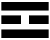

Diagram 2
Cara Soror,
Do what thou wilt shall be the whole of the Law.
Yes, I admit everything! It is all my fault. Looking over my past writings, I do see that my only one-opointed attempt to set forth a sound ontology was my early fumbling letter brochure Berashith. Since then, I seem to have kept assuming that everybody knew all about it; referring to it, quoting it, but never sitting down seriously to demonstrate the thesis, or even to state it in set terms. Chapter 0 of Magick in Theory and Practice skates gently over it; the "Naples Arrangement" in The Book of Thoth dodges it with really diabolical ingenuity. I ask myself why. It is exceedingly strange, because every time I think of the Equation, I am thrilled with a keen glow of satisfaction that this sempiternal Riddle of the Sphinx should have been answered at last.
So then let me now give myself the delight, and you the comfort, of stating the problem from its beginning, and proving the soundness of the solution—of showing that the contradiction of this Equation is unthinkable. — — Are you ready? Forward! Paddle!
A. We are aware.
B. We cannot doubt the existence (whether "real" or "illusory" makes no difference) of something, because doubt itself is a form of awareness.
C. We lump together all that of which we are aware under the convenient name of "Existence", or "The Universe". Cosmos is not so good for this purpose; that word implies "order", which in the present stage of our argument, is a mere assumption.
D. We also tend to think of the Universe as containing things of which we are not aware; but this is altogether unjustifiable, although it is difficult to think at all without making some such assumption. For instance, one may come upon a new branch of knowledge—say, histology or Hammurabi or the language of the Iroquois or the poems of the Hermaphrodite of Panormita. It seems to be there all ready waiting for us; we simply cannot believe that we are making it all up as we go along. For all that, it is sheer sophistry; we may merely be unfolding the contents of our own minds. Then again, does a thing cease to exist if we forget it? The answer is that one cannot be sure.
Personally, I feel convinced of the existence of an Universe outside my own immediate awareness; but it is true, even so, that it does not exist for me unless and until it takes its place as part of my consciousness.
E. All this paragrpah D is in the nature of a digression, for what you may think of it does not at all touch the argument of this letter. But it had to be put in, just to prevent your mind from raising irrelevant objections. Let me continue, then, from C.
F. Something is.* This something appears incalculably vast and complex. How did it come to be?
This, briefly, is the "Riddle of the Universe," which has been always the first preoccupation of all serious philosophers since men began to think at all.
G. The orthodox idiot answer, usually wrapped up in obscure terms in the hope of concealing from the enquirer the fact that it is not an answer at all, but an evasion, is: God created it.
Then, obviously, who created God? Sometimes we have a Demiurge, a creative God behind whom is an eternal formless Greatness—anything to confuse the issue!
Sometimes the Universe is supported by an elephant; he, in turn, stands on a tortoise . . . by that time it is hoped that the enquirer is too tired and muddled to ask what holds up the tortoise.
Sometimes, a great Father and Mother crystallize out of some huge cloudy confusion of "Elements"and so on. But nobody answers the question; at least, none of these God-inventing mules, with their incurably commonplace minds.
H. Serious philosophy has always begun by discarding all these puerilities. It has of necessity been divided into these schools: the Nihilist, the Monist, and the Dualist.
I. The last of these is, on the surface, the most plausible; for almost the first thing that we notice on inspecting the Universe is what the Hindu schools call "the Pairs of Opposites."
This too, is very convenient, because it lends itself so readily to orthodox theology; so we have Ormuzd and Ahriman, the Devas and the Asuras, Osiris and Set, et cetera and da capo, personifications of "Good" and "Evil." The foes may be fairly matched; but more often the tale tells of a revolt in heaven. In this case, "Evil" is temporary; soon, especially with the financial help of the devout, the "devil" will be "cast into the Bottomless Pit" and "the Saints will reign with Christ in glory for ever and ever, Amen!" Often a "redeemer," a "dying God," is needed to secure victory to Omnipotence; and this is usually what little vulgar boys might call a "touching story!"
J. The Monist (or Advaitist) school, is at once subtler and more refined; it seems to approach the ultimate reality (as opposed to the superficial examination of the Dualists) more closely.
It seems to me that this doctrine is based upon a sorites of doubtful validity. To tell you the hideously shameful truth, I hate this doctrine so rabidly that I can hardly trust myself to present it fairly! But I will try. Meanwhile, you can study it in the Upanishads, in the Bhagavad-Gita, in Ernst Haeckel's The Riddle of the Universe, and dozens of other classics. The dogma appears to excite its dupes to dithyrambs. I have to admit the "poetry" of the idea; but there is something in me which vehemently rejects it with excruciating and vindictive violence. Possibly, this is because part of our own system runs parallel with the first equations of theirs.
K. The Monists perceive quite clearly and correctly that it is absurd to answer the question "How came these Many things (of which we are aware) to be?" by saying that they came from Many; and "Many" in this connection includes Two. The Universe must therefore be a single phenomenon: make it eternal and all the rest of it—i.e. remove all limit of any kind—and the Universe explains itself. How then can Opposites exist, as we observe them to do? Is it not the very essence of our original Sorites that the Many must be reducible to the One? They see how awkward this is; so the "devil" of the Dualist is emulsified and evaporated into "illusion;" what they call "Maya" or some equivalent term.
"Reality" for them consists solely of Brahman, the supreme Being "without quantity or quality." They are compelled to deny him all attributes, even that of Existence; for to do so would instantly limit them, and so hurl them headlong back in to Dualism. All that of which we are aware must obviously possess limits, or it could have no intelligible meaning for us; if we want "pork," we must specify its qualities and quantities; at the very least, we must be able to distinguish it from "that-which-is-not-pork."
But—one moment, please!
L. There is in Advaitism a most fascinating danger; that is that, up to a certain point, "Religious Experience" tends to support this theory.
A word on this. Vulgar minds, such as are happy with a personal God, Vishnu, Jesus, Melcarth, Mithras, or another, often excite themselves—call it "Energized Enthusiasm" if you want to be sarcastic!—to the point of experiencing actual Visions of the objects of their devotion. But these people have not so much as asked themselves the original question of "How come?" which is our present subject. Sweep them into the discard!
M. Beyond Vishvarupadarshana, the vision of the Form of Vishnu, beyond that yet loftier vision which corresponds in Hindu classification to our "Knowledge and Conversation of the Holy Guardian Angel", is that called Atmadarshana, the vision (or apprehension, a much better word) of the Universe as a single_phenomenon, outside all limitations, whether of time, space, causality, or what not.
Very good, then! Here we are with direct realization of the Advaitist theory of the Universe. Everything fits perfectly. Also, when I say "realization," I want you to understand that I mean what I say in a sense so intense and so absolute that it is impossible to convey my meaning to anyone who has not undergone that experience.†
How do we judge the "reality" of an ordinary impression upon consciousness? Chiefly by its intensity, by its persistence, by the fact that nobody can argue us out of our belief in it. As people said of Berkeley's 'Idealism'—"his arguments are irrefutable but they fail to carry conviction." No sceptical, no idealist queries can persuade us that a kick in the pants is not 'real' in any reasonable sense of the word. Moreover memory reassures us. However vivid a dream may be at the time, however it may persist throughout the years (though it is rare for any dream, unless frequently repeated, or linked to waking impressions by some happy conjunction of circumstances, to remain long in the mind with any clear-cut vision) it is hardly ever mistaken for an event of actual life. Good: then, as waking life is to dream, so—yes, more so!—is Religious Experience as above described to that life common to all of us. It is not merely easy, it is natural, not merely natural, but inevitable, for anyone who has experienced "Samadhi" (this word conveniently groups the higher types of vision‡) to regard normal life as "illusion" by comparison with this state in which all problems are resolved, all doubts driven out, all limitations abolished.
But even beyond Atmadarshana comes the experience called Sivadarshana,§ in which this Atman (or Brahman), this limit-destroying Universe, is itself abolished and annihilated.
(And, with its occurrence, smash goes the whole of the Advaitist theory!)
It is a commonplace to say that no words can describe this final destruction. Such is the fact; and there is nothing one can do about it but put it down boldly as I have done above. It does not matter to our present purpose; all that we need to know is that the strongest prop of the Monist structure has broken off short.
Moreover, is it really adequate to postulate an origin of the Universe, as they inevitably do? Merely to deny that there ever was a beginning by saying that this "one" is eternal fails to satisfy me.
What is very much worse, I cannot see that to call Evil "illusion" helps us at all. When the Christian Scientist hears that his wife has been savagely mauled by her Peke, he has to smile, and say that "there is a claim of error." Not good enough.
* You must read The Soldier an The Hunchback: ! and ? in the Equinox I, 1.
† I have discussed this and the following points very fully in Book 4 Part I, pp. 63-89.
‡ "Vision" is a dreadfully bad word for it; "trance" is better, but idiots always mix it up with hypnotism.
§ Possibly almost identical with the Buddhist Neroda-Samapatti.
N. It has taken a long while to clear the ground. That I did not expect; the above propositions are so familiar to me, they run so cleanly through my mind, that, until I came to set them down in order, I had no idea what a long and difficult business it all was.
Still, it's a long lane, etc. We have seen that "Two" (or "Many") are unsatisfactory as origin, if only because they can always be reduced to "One"; and "One" itself is no better, because, among other things, it finds itself forced to deny the very premises on which it was founded.
Shall we be any better off if we assume that "Ex nihilo nihil fit" is a falsehood, that the origin of All Things is Nothing? Let us see!
O. Shall we first glance at the mathematical aspect of Nothing? (Including its identical equation in Logic.) This I worked out so long ago as 1902 e.g. in Berashith, which you will find reprinted in The Sword of Song, and in my Collected Works, Vol. I.
The argument may be summarized as follows.
When, in the ordinary way of business, we write 0, we should really write 0n.1 For 0 implies that the subject is not extended in any dimension under discussion. Thus a line may be two feet in length, but in breadth and depth the coefficient is Zero. We could describe it as 2f × 0b × 0d, or n2f + 0b + 0d.2
What I proposed in considering "What do we mean by Nothing?" was to consider every possible quality of any object as a dimension.
For instance, one might describe this page as being nf + n'b + n''d + 0 redness + 0 amiability + 0 velocity + 0 potential and so on, until you had noted and measured all the qualities it possesses, and excluded all that it does not. For convenience, we may write this expression as Xf+b+d+r+a+v+p—using the initials of the qualities which we call dimensions.
Just one further explanation in pure mathematics. To interpret X1, X1+1 or X2, and so on, we assume the reference to be to spatial dimensions. Thus suppose X1 to be a line a foot long, X2 will be a plane a foot square, and X3 a cube measuring a foot in each dimension. But what about X4? There are no more spatial dimensions. Modern mathematics has (unfortunately, I think) agreed to consider this fourth dimension as time. Well, and X{5}? To interpret this expression, we may begin to consider other qualities, such as electric capacity, colour, moral attributes, and so on.3 But this remark, although necessary, leads us rather away from our main thesis instead of toward it.
P. What happens when we put a minus sign before the index (that small letter up on the right) instead of a plus? Quite simple. x2 = X1+1 = X1 + X1. With a minus, we divide instead of multiplying. Thus, X3-2 = X3 ÷ X2 = X1, just as if you had merely subtracted the 2 from the 3 in the index.
Now, at last, we come to the point of real importance to our thesis: how shall we interpret X0? We may write it, obviously, as X1-1 or Xn-n. Good, divide. Then X1 ÷ X1 = 1. This is the same, clearly enough, whatever X may be.
Q. Ah, but what we started to do was discover the meaning of Nothing. It is not correct to write it simply as 0; for that 0 implies an index 01, or 0{2}, or 0n. And if our Nothing is to be absolute Nothing, then there is not only no figure, but no index either. So we must write it as 00.
What is the value of this expression? We proceed as before; divide.
00 = 0n-n = 0n ÷ 0n = (0n ÷ 1) × (1 ÷ 0n). Of course 0n ÷ 1 remains 0; but 1 ÷ 0{n} = ∞.
That is, we have a clash of the "infinitely great" with the "infinitely small;" that knocks out the "infinity" (and Advaitism with it!) and leaves us with an indeterminate but finite number of utter variety. That is: 00 can only be interpreted as "The Universe that we know."
R. So much for one demonstration. Some people have found fault with the algebra; but the logical Equivalent is precisely parallel. Suppose I wish to describe my study in one respect: I can say "No dogs are in my study," or "Dogs are not in my study." I can make a little diagram: D is the world of dogs; S is my study. Here it is:
Diagram 1
The squares are quite separate. The whole world outside the square D is the world of no dogs: outside the square S, the world of no-study. But suppose now that I want to make the Zero absolute, like our 00, I must say "No dogs are not in my study."
Or, "There is no absence-of-dog in my study." That is the same as saying: "Some doge are in my study;" diagram again:
Diagram 2
In Diagram 1, "the world where no dogs are" included the whole of my study; in Diagram 2 that absence-of-dog is no longer there; so one or more of them must have got in somehow.
That's that; I know it may be a little difficult at first; fortunately there is a different way—the Chinese way—of stating the theorem in very much simpler terms.
S. The Chinese, like ourselves, begin with the idea of "Absolute Nothing." They "make an effort, and call it the Tao;" but that is exactly what the Tao comes to mean, when we examine it. They see quite well, as we have done above, that merely to assert Nothing is not to explain the Universe; and they proceed to do so by means of a mathematical equation even simpler than ours, involving as it does no operations beyond simple addition and subtraction. They say "Nothing obviously means Nothing; it has no qualities nor quantities." (The Advaitists said the same, and then stultified themselves completely by calling it One!) "But," continue the sages of the Middle Kingdom, "it is always possible to reduce any expression to Nothing by taking any two equal and opposite terms." (Thus n = (-n) = 0.) "We ought therefore to be able to get any expression that we want from Nothing; we merely have to be careful that the terms shall be precisely opposite and equal." (0 = n + (-n). This then they did, and began to diagrammatize the Universe as the Ηa pair of opposites, the Yang or active male, and the Yin or passive Female, principles. They represented the Yang by an unbroken ( ——— ), the Yin by a broken ( — — ), line. (The first manifestation in Nature of these two is Thƒi Yang, the Sun, and the Thƒi Yin, the Moon.) This being a little large and loose, they doubled these lines, and obtained the four Hsiang. They then took them three at a time, and got the eight Kwa. These represent the development from the original Œ {S.B. cap "I"} to the Natural Order of the Elements.
I shall call the male principle M, the Female F.
| M.1. | Khien | "Heaven-Father" | F.1. |  | Khwån | "Earth-Mother" | |
| M.2. |  | Lî | The Sun | F.2. | Khîn | The Moon | |
| M.3. | Kån | Fire | F.3. | Tui | Water | ||
| M.4. |  | Sun | Air | F.4. |  | Kån | Earth |
Note how admirably they have preserved the idea of balance. M.1. and F.1. are perfection. M.2. and F.2. still keep balance in their lines. The four "elements" show imperfection; yet they are all balanced as against each other. Note, too, how apt are the ideograms. M.3. shows the flames flickering on the hearth, F.3., the wave on the solid bottom of the sea; M.4., the mutable air, with impenetrable space above, and finally F.4., the thin crust of the earth masking the interior energies of the planet. They go in to double these Kwâ, thus reaching the sixty-four Hexagrams of the Yî King, which is not only a Map, but a History of the Order of Nature.
It is pure enthusiastic delight in the Harmony and Beauty of the System that has led me thus far afield; my one essential purpose is to show how the Universe was derived by these Wise Men from Nothing.
When you have assimilated these two sets of Equations, when you have understood how 0 = 2 is the unique, the simple, and the necessary solution of the Riddle of the Universe, there will be, in a sense, little more for you to learn about the Theory of Magick.
You should, however, remember most constantly that the equation of the Universe, however complex it may seem, inevitably reels out to Zero; for to accomplish this is the formula of your Work as a Mystic. To remind you, and to amplify certain points of the above, let me quote from Magick pp. 152-3 footnote 2.
All elements must at one time have been separate—that would be the case with great heat. Now when atoms get to the sun, we get that immense extreme heat, and all the elements are themselves again. Imagine that each atom of each element possesses the memory of all his adventures in combination. By the way, that atom (fortified with that memory) would not be the same atom; yet it is, because it has gained nothing from anywhere except this memory. Therefore, by the lapse of time, and by virtue of memory, a thing could become something more than itself; thus a real development is possible. One can then see a reason for any element deciding to go through this series of incarnations, because so, and only so, can he go; and he suffers the lapse of memory which he has during these incarnations, because he knows he will come through un- changed.
Therefore you can have an infinite number of gods, individual and equal though diverse, each one supreme and utterly indestructible. This is also the only explanation of how a "Perfect Being" could create a world in which war, evil, etc., exist. God is only an appearance, because (like "good") it cannot affect the substance itself, but only multiply its combinations. This is something the same as mystic monotheism; but all parts of himself, so that their interplay is false. If we presuppose many elements, their interplay is natural.
It is no objection to this theory to ask who made the elements—the elements are at least there, and God, when you look for him, is not there. Theism is obscurum per obscurius. A male star is built up from the centre outwards; a female from the circumference inwards. This is what is meant when we say that woman has no soul. It explains fully the difference between the sexes.
Every "act of love under will" has the dual result (1) the creation of a child combining the qualities of its parents, (2) the withdrawal by ecstasy into Nothingness. Please consult what I have elsewhere written on "The Formula of Tetagrammaton;" the importance of this at the moment is to show how 0 and 2 appear constantly in Nature as the common Order of Events.
Love is the law, love under will.
Fraternally,
666
1: Add comments to distinguish indices (Abstract Algebra) from powers of numbers. I shouldn't, but as a physicist, I have to say that Crowley is giving an erroneous layman's opinion and his usage of math notation cannot be considered correct. These expressions are ok as text, but not as math without redefinition through Abstract Algebra, a field Crowley appears not to know by name. The ideas are valid, but the expressions are misleading. It might be wise to add a footnote about the notation being non-traditional. Notably, this line defies Pythagoras! Crowley's notation with superscripts is the problem. It looks like powers of numbers instead of indices. He probably intended indices, but didn't know how to represent them or flag them in typography – WEH.
The problem is that Crowley's later reasoning, in particular his calculations of the value of 00 only make sense if he means powers. Now there is nothing per se to stop us representing his "categories" in terms of an n-dimensional space, but each category is incommensurable with the others – T.S.
2: This is bogus math, plain and simple. If d1, d2, ... dn are the dimensions in n dimensional space of our object, the volume of n-dimensional space it occupies will be d1 × d2 × ... ×dn; if we multiply each dimension by x, the volume of the whole thing is multiplied by xn. As noted above, the way Crowley develops the argument indicates he is thinking of powers but his use thereof at this point is wrong – T.S.
© Ordo Templi Orientis. Original key entry by W.E. Heidrick for O.T.O. HTML coding by Frater T.S. for Nu Isis Working Group.
Next Chapter
Previous Chapter
Back to contents